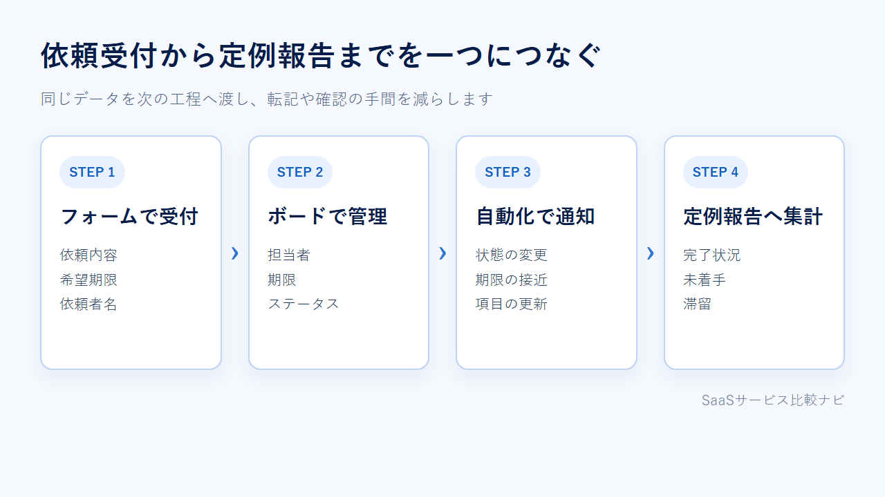

ワークマネジメントツールとは？タスク管理との違いとmonday.comの活用例
ワークマネジメントツールは、複数部署から届く依頼を、担当割当から定例報告まで同じ場所で管理するための製品です。
個人のToDo管理や単一プロジェクトとの違いを整理し、monday.comで仕事をつなぐ方法と無料で試せる範囲を紹介します。
ワークマネジメントツールで管理できる仕事の流れ
ワークマネジメントツールが扱うのは、個人のタスクだけではありません。依頼の入口から複数部署の進捗、定例報告までを同じ場所で追います。
- 依頼を受ける
- 担当者と期限を決める
- 進捗と滞留を共有する
- 複数案件を集計する
- 定例報告へつなぐ
テンプレートや管理画面の例を見ながら、自社の仕事を載せられるか確認できます。

依頼受付から定例報告までを一つにつなぐ
たとえば、営業部から制作部へバナーを依頼する場面を考えてみましょう。依頼時に案件名や希望期限を受け取り、制作担当者を割り当てます。
担当者は作業の進み具合を更新し、管理者は複数の依頼をまとめて把握します。週次会議では、その情報をもとに完了件数や滞留を共有します。
この流れをメール、チャット、Excelへ分けると、転記や確認が増えます。一つの情報を次の工程へ渡せることが、ワークマネジメントツールの役割です。
タスク管理・プロジェクト管理との違い
違いは機能の多さではなく、管理する仕事の範囲にあります。関係者や期間、繰り返し業務、複数案件の集計まで考えると、自社に必要な仕組みが見えてきます。
個人のToDo管理は自分の作業を忘れないためのもの
個人のToDo管理では、自分が何をいつまでに終えるかが中心です。買い物リストや今日の作業など、関係者が自分だけならシンプルなチェックリストで足ります。
繰り返し業務も自分で把握でき、複数案件を管理職へ報告する必要がないなら、大がかりな仕組みは不要です。新しい製品を入れるより、今の方法を続けたほうが負担を抑えられます。
プロジェクト管理は一つの期限と成果物を追う
プロジェクト管理は、Webサイトの公開や新商品の発売など、開始日と終了日がある仕事に向きます。担当、期限、前後する作業を並べ、最終成果物までの道筋を追う考え方です。
関係者が複数いても、一つの案件だけを扱うなら、管理範囲は限られます。別案件を横断した集計や、日常的に届く依頼の受付までは含めない場合もあります。
ワークマネジメントは複数部署の継続業務まで扱う
ワークマネジメントでは、終わりのあるプロジェクトに加えて、毎週届く制作依頼や採用申請なども扱います。複数部署が同じルールで更新し、案件をまたいで状況を見る仕組みです。
一件ずつの完了だけでなく、どこに仕事が集中しているかも共有します。部署ごとの管理表を一つずつ開かず、横断的な報告につなげたい会社に向いています。
ワークマネジメントツールが必要な会社・まだ不要な会社
部門をまたぐ依頼や手作業の報告が増えているなら、導入を検討する時期です。一方、担当者が少なく案件も一つなら、既存のタスク管理で足りる場合があります。
部門横断の依頼と進捗確認が増えたら導入を検討する
次の状態が重なってきたら、仕事の流れをまとめる余地があります。
- 依頼がメールやチャットへ分散している
- 誰が担当するのか決まるまで時間がかかる
- 会議前に複数の管理表を転記している
- 同じ進捗を別の相手へ何度も報告している
- 完了件数より未着手や滞留を把握しにくい
特に、依頼を受ける人と作業する人、報告を受ける人が別なら、情報をまとめる意義が明確です。一つの場所に集めれば、担当者が同じ案件を見ながら話せます。
少人数・単一案件なら今のタスク管理で足りることもある
担当者が一人か二人で、進行中の案件も一つなら、導入コストのほうが大きくなることがあります。項目の設計や更新ルールを決める作業も必要だからです。
チャットとタスクリストだけで抜け漏れなく回っているなら、急いで移す理由はありません。まず困っている場面を一つ挙げられるかが判断の分かれ目です。
monday.comで依頼から定例報告までつなぐ方法
monday.comでは、受付、担当割当、進捗更新、通知、集計に同じデータを使えます。ここでは、制作依頼を受けて週次会議で報告するまでの流れを説明します。
フォームで依頼の入口をそろえる
最初に、依頼者名、依頼内容、希望期限といった入力項目をフォームに用意します。営業部や人事部など、依頼する側は同じ窓口から必要事項を送る形です。
送信された内容はボードの項目になります。担当者がメールから情報を写すのではなく、受け付けた内容をそのまま次の工程へ渡せます。
ボードで担当者・期限・ステータスを管理する
ボードでは、一件の依頼を一つの項目として追います。担当者、期限、ステータスを持たせれば、誰が次に動くのかをチームで共有できます。
依頼内容の補足やファイルも案件と一緒に扱う形です。作業者は自分の担当を更新し、管理者は未着手や進行中の案件を一覧で見ます。
自動化で通知と引き継ぎを減らす
ステータス変更や期限をきっかけに、通知や項目更新を動かすのが自動化です。たとえば、制作完了へ変わったときに依頼者へ連絡する流れを設定します。
すべてを自動にする必要はありません。毎回同じ相手へ送る連絡から設定すると、人が判断する作業との境界を保てます。
ダッシュボードで複数案件を定例報告へまとめる
ダッシュボードは、接続したボードの情報をまとめる場所です。管理者は案件ごとのボードを開き直さず、完了状況や滞留を週次会議の材料にできます。
報告用の数字を別に作る必要はありません。担当者が更新した情報を集計へつなげれば、受付から報告まで一つの流れになります。

フォーム、ボード、自動化、ダッシュボードを組み合わせた管理例を確認できます。
無料で試せる範囲と有料化を考える目安
二人までの小さな検証はFreeで始められます。Freeで試せるのは、依頼受付や進捗更新を手作業で進める流れです。自動化まで試す場合は、14日間のProトライアルを使います。
2人までならFreeで小さく試せる
monday.comのFreeは期限がなく、最大2席で利用できます。利用できる主な機能は次のとおりです。
- ボードは3個まで
- Docsは3個まで
- アイテムは初期200件
- ストレージは500MB
- 200を超えるテンプレートを利用可能
依頼受付から手作業の進捗更新までを確かめるなら、対象業務を一つに絞るのが現実的です。紹介によってアイテム数を増やせますが、最初は初期枠で一巡できる規模から始めます。
自動化・外部連携・ゲストが必要なら有料化を検討する
Freeでは自動化、外部連携、ゲストや閲覧者の招待を利用できません。自動化を使う場合は、月250回まで含むStandardが判断の起点です。年払いの月額換算は1ユーザー¥1,650で、最低3席から契約します。
Proの機能は14日間のトライアルで試せます。自動通知や外部連携まで含む流れは、この期間に検証します。そのうえで、Standardで足りるか、上位プランが必要かを判断します。
日本語UIと日本からの支払い条件も契約前に見る
アカウント言語には日本語を選べます。公式の日本語ヘルプセンターも用意されているため、画面項目と手順を日本語で追えます。
日本向けの公式料金ページは円表示です。ただし、請求通貨と最終価格は請求国や購入画面で決まります。
支払い方法は地域によって異なります。管理者は請求画面から請求書を閲覧し、ダウンロードできます。
無料枠とトライアルの条件を見比べ、必要な人数と機能で始め方を選べます。
monday.com以外を選ぶなら管理範囲と契約条件を合わせる
自動化の実行回数や社外ゲストの人数を重視するなら、Asanaも候補です。日本語の契約実務とプロジェクト管理を重視するなら、Backlogが選択肢に入ります。
Asanaは部門横断の管理を別の設計で試したい会社向け
Asanaの無料Personalは2ユーザーまでです。タスクやプロジェクトに加え、リスト、ボード、カレンダーで仕事を表示できます。
タイムラインやガント、ダッシュボード、フォームは有料のStarterから使えます。Starterはオートメーションと無料ゲストを無制限で利用できます。monday.com Standardは自動化が月250回で、契約は最低3席です。実行回数と参加人数が、選び分けの基準になります。
日本語UIと円建ての料金ページがあり、クレジットカードとPayPalに対応します。機能だけでなく、日本から契約するときの支払い条件も比較材料になります。
Backlogは日本語の契約実務を重視する会社向け

Backlogは日本語UIを備え、料金は円建てです。銀行振込と主要なクレジットカードに対応し、管理画面から請求書や領収書を取得できます。
現行Freeは10ユーザー、1プロジェクトまで。ただし、2027年1月1日から新Freeへ移行し、ユーザー上限は原則5名になります。既存ユーザーが6〜10名いる場合は継続利用できますが、新しいユーザーは追加できません。複数部署の依頼を横断して集計するより、日本語環境で一つのプロジェクトを管理したい会社に合う選択肢です。
導入前に決めたい4つの最小ルール
最初から全業務を移す必要はありません。一つの依頼フローと少数のルールで始め、更新が続くかを確かめます。
- 最終更新の責任者を1人決める
- 期限の入力を必須にする
- 進捗更新はmonday.comへ一本化する
- 週次報告はダッシュボードから作る
担当者・期限・更新場所を先に決める
一つの項目には、最終更新の責任者を一人置きます。共同作業者や承認者がいる場合は別の項目で持ち、誰が進捗を確定するのかを明確にします。期限も必ず入力する運用を基本にします。
進捗をメールやチャットへ書き、あとでmonday.comへ転記する方法は二重管理になります。チャットは相談、monday.comは確定した進捗というように、置く情報を分けます。
一つの依頼フローで試してから広げる
最初に選ぶのは、受付から完了、報告までを短期間で一巡できる業務です。件数が多すぎず、関係者が少ない定型依頼なら、必要な項目を見直せます。
手作業の流れはFreeで一巡させます。自動通知や外部連携まで試す場合は、14日間のProトライアルを使います。更新されなかった項目を削り、責任者と期限を無理なく更新できたら別部署へ広げます。
まとめ｜部門をまたぐ仕事の流れが増えたら検討する
個人のToDoや単一案件で足りるなら、ワークマネジメントツールを無理に導入する必要はありません。複数部署の依頼、進捗、報告を一つにつなぎたい場合が導入の目安です。
- 今の管理で足りる：担当者が少なく、案件が一つ
- 導入を検討する：依頼窓口や報告が分散している
- 最初に試す：受付から報告までの一つの流れ
まず一つの依頼フローを無料枠かトライアルで試す
対象業務を一つ選び、責任者、期限、ステータスを決めます。手作業の受付と進捗更新はFreeで試せます。自動通知まで含めるなら14日間のProトライアルを使い、転記が減るか、更新が続くかを見て継続を判断しましょう。
FreeとProトライアルの機能差を見ながら、一つの依頼フローを試せます。